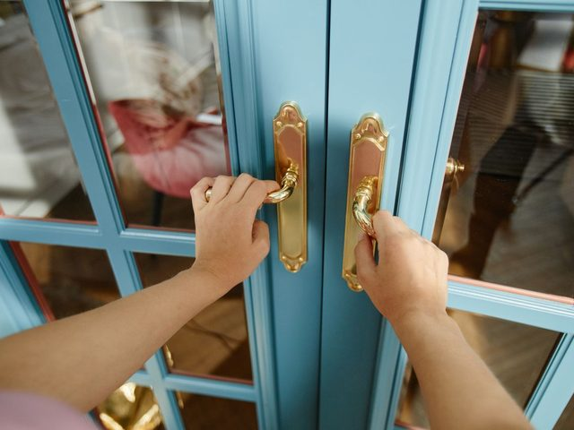

VOCABULARY · WORD UP 單字複習 UNIT 10
C-III．C 開頭（三）
WORD UP「C-III」的 38 個字（Chinese 到 collect）。紅色＝要複習，藍色標籤＝WORD UP 標熟記、還要在這裡考對。
共 38 個單字．點 🔊 聽發音

1Chineseadj./n.
中國的；中文；華人
Chinese is not easy to learn.中文不容易學。

2chocolaten.
巧克力
I love hot chocolate in winter.我冬天很愛喝熱可可。
3choicen.
選擇
choose 的名詞；make a choice
You have to make a choice.你必須做個選擇。
4choosev.
選擇
三態 choose-chose-chosen
Choose one color you like.選一個你喜歡的顏色。

5chopstickn.
筷子
通常用複數 chopsticks；a pair of chopsticks
Can you use chopsticks?你會用筷子嗎？

6Christmasn.
聖誕節
t 不發音
Merry Christmas!聖誕快樂！

7chubbyadj.
胖嘟嘟的
可愛的胖
The baby has chubby cheeks.寶寶的臉頰胖嘟嘟的。
8churchn.
教堂
They go to church on Sundays.他們星期天去教堂。
9circlen./v.
圓圈；圈起來
Circle the right answer.把正確答案圈起來。
10citizenn.
公民；市民
Good citizens obey the law.好公民會守法。
11cityn.
城市
複數 cities
Taipei is a busy city.台北是個繁忙的城市。
12claimv./n.
聲稱；索取
claim + that…
He claimed that he saw a ghost.他聲稱他看到鬼。

13clapv.
拍手
過去式 clapped
Everyone clapped for the singer.大家為歌手鼓掌。

14classn.
班級；課
複數 classes
We have six classes today.我們今天有六堂課。
15classicadj./n.
經典的；經典作品
This movie is a classic.這部電影是經典。

16classicaladj.
古典的
classical music 古典音樂
Mom likes classical music.媽媽喜歡古典音樂。

17classmaten.
同學
Amy is my classmate.Amy 是我的同學。
18cleanadj./v.
乾淨的；打掃
clean up 打掃乾淨
Please clean your room.請打掃你的房間。

19clearadj./v.
清楚的；晴朗的；清除
The sky is clear today.今天天空很晴朗。

20clerkn.
店員；職員
The clerk helped me find the book.店員幫我找到那本書。

21cleveradj.
聰明的
= smart
What a clever idea!好聰明的主意！

22climaten.
氣候
weather 天氣（短期）
Taiwan has a warm climate.台灣氣候溫暖。

23climbv.
爬
b 不發音；climb a mountain 爬山
We climbed Yangmingshan last weekend.我們上週末去爬陽明山。

24clockn.
時鐘
watch 手錶
The clock on the wall is slow.牆上的時鐘慢了。

25closev./adj.
關閉；接近的；親近的
動詞唸 /kloʊz/，形容詞唸 /kloʊs/
Please close the door.請關門。

26closetn.
衣櫥
Hang your coat in the closet.把外套掛進衣櫥。
27clothesn.
衣服
一定用複數
I need some new clothes.我需要一些新衣服。

28cloudyadj.
多雲的；陰天的
cloud 雲
It is cloudy today.今天是陰天。

29clubn.
社團；俱樂部
join a club 參加社團
I joined the music club.我參加了音樂社。

30coachn.
教練
Our coach is strict but kind.我們的教練嚴格但很好。

31coastn.
海岸
on the coast
We drove along the east coast.我們沿著東海岸開車。

32coatn.
外套；大衣
Put on your coat. It's cold.穿上外套，天氣很冷。

33cockroachn.
蟑螂
My sister screamed when she saw a cockroach.我妹妹看到蟑螂時尖叫了。

34coffeen.
咖啡
不可數；a cup of coffee
Dad drinks a cup of coffee every morning.爸爸每天早上喝一杯咖啡。
35coinn.
硬幣
I put a coin into the machine.我把一枚硬幣投進機器。

36Coken.
可樂
= Coca-Cola
Can I have a Coke, please?可以給我一杯可樂嗎？
37coldadj./n.
冷的；感冒
catch a cold 感冒
I caught a cold yesterday.我昨天感冒了。

38collectv.
收集
名詞 collection
My brother collects stamps.我哥哥收集郵票。
FOCUS
容易搞混的字
| 字 | 用法 | 例子 |
|---|---|---|
| choose / choice | 選擇（動詞）／ 選擇（名詞） | choose a book ／ make a choice |
| classic / classical | 經典的 ／ 古典的（音樂、文學） | a classic movie ／ classical music |
| climate / weather | 氣候（長期）／ 天氣（今天） | a warm climate ／ nice weather |
| clothes / cloth | 衣服（複數）／ 布 | new clothes ／ a piece of cloth |
| clock / watch | 時鐘 ／ 手錶 | a wall clock ／ a watch on my wrist |
| coat / coast | 外套 ／ 海岸 | wear a coat ／ on the coast |
close 當動詞（關）唸 /kloʊz/，當形容詞（近的）唸 /kloʊs/：a close friend。
FOCUS
常考片語
| 說法 | 中文 | 例子 |
|---|---|---|
| make a choice | 做選擇 | It's hard to make a choice. |
| catch a cold | 感冒 | Wear a coat, or you'll catch a cold. |
| clean up | 打掃乾淨 | clean up the classroom |
| join a club | 參加社團 | join the basketball club |
| a pair of chopsticks | 一雙筷子 | two pairs of chopsticks |
| be close to | 靠近、親近 | My home is close to the school. |